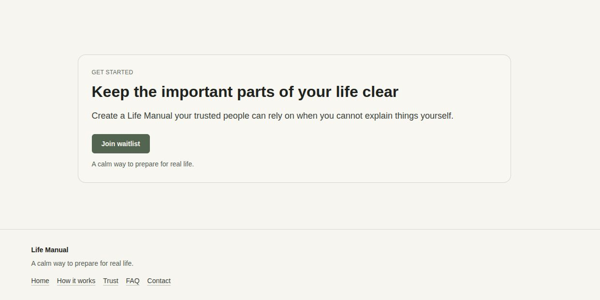

Featured Build
Life Manual
A shipped waitlist landing-page product focused on trust, clarity, and clear user guidance around a serious real-life use case.
- Communicates sensitive value with calm visual hierarchy
- Responsive structure designed for mobile-first reading flow
- Built and shipped through team-based frontend delivery